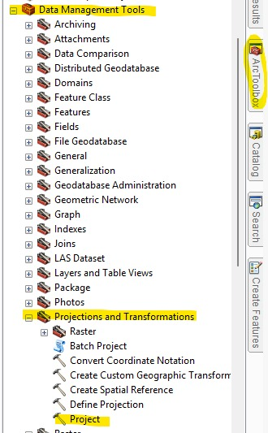
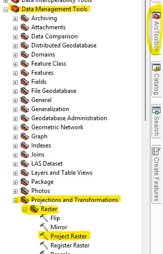

Reproyección de Shapefile
Si necesitas cambiar el sistema de coordenadas de un shapefile (por ejemplo de WGS84 a MAGNA Colombia Bogotá), usa la herramienta de reproyección del SIG.

Reproyección de Raster
Si necesitas reproyectar un raster debes usar la herramienta de warp o reprojection raster dependiendo del software SIG.
